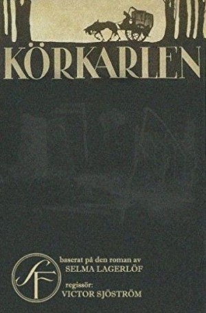

Season 49 (2014-2015)
-
 September 14, 2014Directed by Charles Chaplin; Starring Charles Chaplin, Virginia Cherrill, Florence Lee, Harry Myers, Al Ernest Garcia
September 14, 2014Directed by Charles Chaplin; Starring Charles Chaplin, Virginia Cherrill, Florence Lee, Harry Myers, Al Ernest Garcia
City Lights
USA, 1931, 87 min, B&W, G, Silent w/intertitles
When Chaplin made this picture, although three years into the era of sound, he must have known that "City Lights" might be his last silent film. Although the film has a full musical score (composed by Chaplin) and sound effects, it has no speech. This film would come the closest to representing all the different levels of his genius. It contains the pathos, the pantomime, the effortless physical coordination, the melodrama, the bawdiness, the grace, and, of course, the Little Tramp, a character to become the most famous image on earth, as he struggles to help a blind flower girl with whom he has fallen in love.
Film Notes (Karen Bender): In 1931, Charles Chaplin was arguably the most famous man on the planet. With a face and figure recognized in movie houses on every continent, the Little Tramp was embraced by audiences like no other character. However, Chaplin was now faced with a challenge – "talkies". When Al Jolson sang "Mammy" on the big screen, audiences' expectations began to change. Yet two years after the first "talkie", Chaplin continued to make silent films. He produced City Lights, which was under production when sound emerged, and Modern Times, two of his most accomplished efforts, both virtually silent and both made after the advent of sound.
Chaplin's decision to produce City Lights as a silent film was largely because he was unsure how the Little Tramp would exist in a cinematic world with sound. Because the Little Fellow never spoke onscreen, his appeal was universal. Simple themes of love and loss sprinkled with a bit of larceny were able to be appreciated by any audience anywhere. City Lights still works – because we understand what is not being said.
City Lights is the story of the Little Tramp and a blind flower girl with whom he falls in love. The Blind Girl mistakes the Tramp for a rich millionaire. The Tramp befriends a real millionaire but the man only recognizes the Tramp when he is in a state of utter intoxication. When sober, he has no memory of the Tramp. Desiring to help the Blind Girl, the Tramp unsuccessfully tries his hand at street sweeping and prize fighting to earn money. He thinks that his luck has changed when the drunken millionaire gives him $1000, a sum that he gives to the girl so she can get her sight restored. And that's when things go wrong.
Because of the availability of sound, City Lights was the first film for which Chaplin himself composed the score, which is featured prominently throughout. City Lights also contains a very noticeable and humorous sound effect in the first scene when Chaplin skewers the sound of the early talkies by superimposing an annoying buzzing sound over the voices of the stuffed shirts making speeches in the opening sequence. Chaplin was giving the talkies a "raspberry."
Chaplin still had films ahead of him, some of them great ones, but City Lights marks the beginning of the end of the silent era for Charles Spencer Chaplin. In Chaplin's next "silent" venture, the Little Tramp would sing. But that all lay ahead of Charles Chaplin and the Little Tramp when they appeared in City Lights. Enjoy.Read Roger Ebert's review of City Lights at Great Movies. October 12, 2014Directed by Terry Gilliam; Starring Christopher Plummer, Andrew Garfield, Lily Cole, Heath Ledger
October 12, 2014Directed by Terry Gilliam; Starring Christopher Plummer, Andrew Garfield, Lily Cole, Heath Ledger
The Imaginarium of Doctor Parnassus
UK, 2009, 123 min, Color, PG-13
Dr. Parnassus runs a sort of circus troupe with his daughter Valentina and two other compatriots. Their shtick is the hawking of the Imaginarium which supposedly allows those who enter to live out their dream life. Their scheme is not going well and they have money problems. Parnassus makes a bet with the devil who predicts Parnassus would find a man who would be their savior. Their new teammate is adroit at attracting customers and changes Parnassus' life. This is a wonderful fantasy drawn from pure imagination.
Film Notes (Gerry Folden): Terry Gilliam's award-winning film Brazil (1985) has twice pleased Cinema Inc. subscribers: seasons 32 (1997-98) and 40 (2005-06). This film followed his incalculable contributions as author of the films by the irrepressible Monty Python troop: Monty Python and the Holy Grail (1975), Life of Brian (1979), and The Meaning of Life (1983). One might imagine Gilliam, as a founding member of the Pythons in 1969, is a native Englishman. Au contraire… he was born November 22, 1940, in Minneapolis, but did become a naturalized British citizen in 1968. (He renounced his American citizenship in 2006).
Any consideration of this film is best served by borrowing the Python's catchphrase "…and now for something completely different." The trademark of a Gilliam film, often recognized by the many Oscar nominations and awards, is the amazing visuals that delight and amaze audiences. These marvelous attributes are on full display in this imaginative retelling of the Faustian myth.
Until he played Captain Von Trapp in The Sound of Music (1965), Christopher Plummer's acting career was for all practical purposes limited to the small screen. Born December 13, 1929, in Toronto, he became the oldest recipient of an Oscar when, in 2012 at the age of 82, his contribution to Beginners (2010) was rewarded with the Best Actor in a Supporting Role statuette. As Dr. Parnassus in The Imaginarium, he portrays the magical impresario of a troupe of traveling tragedians who purport to fulfill dreams through the powers of their performances. In a Faustian bargain made centuries before, Dr. Parnassus had bargained immortality from the devil Mr. Nick (Tom Waits). Subsequently, he fell in love with a mortal woman for whom he was willing to trade his longevity for the youth and mortality needed to live out his years with his one true love. In his renegotiation with Mr. Nick, he foolishly gave away the soul of his firstborn on her sixteenth birthday. What must he do now to reclaim the soul of his beautiful daughter Valentina (Lily Cole)?
Foremost this is a tale of love; all the various Greek meanings of love – agape, eros, philia and storge. And like the Greek Mount Parnassus, this film is infused with all the legendary attributes associated with this mythic home of the Muses – poetry, music and works of famous painters.
When Heath Ledger, Valentina's lover, died in mid-production in January 2008, work was suspended for months. What to do? The answer will be just one of the many delights awaiting you when you join into the magic of the Imaginarium. November 9, 2014Directed by Milos Forman; Starring Jan Vostrcil, Josef Sebánek, Josef Valnoha, Frantisek Debelka
November 9, 2014Directed by Milos Forman; Starring Jan Vostrcil, Josef Sebánek, Josef Valnoha, Frantisek Debelka
The Firemen's Ball (Horí, má panenko)
Czechoslovakia, 1967, 73 min, Color, Not Rated, Czech w/subtitles
This is the story of a single night at a small-town party organized by the local fire brigade to honor their retiring chairman on his eighty-sixth birthday (they missed honoring him on the more meaningful eighty-fifth, in the first of many fumbles by this incompetent assemblage). From the very beginning Forman sets the scene for the idiocy to come. The firemen accuse each other of stealing the prizes from the night's lottery fund, and set fire to the banner that was to hang above the hall during the ball. The fact that they're unable to put out even a small blaze shows their bungling and sets up the film's surprising poignant climax in this deadpan, hilarious satire.
Film Notes (Pete Corson): This is one of the funniest films you will ever see. It is an early film by Milos Forman, whom we know as the director of One Flew Over the Cuckoo's Nest, Hair, Ragtime, Amadeus, Valmont, and The People vs. Larry Flynt. It comes from another world and another time and shows a side of Forman we never would expect.
Milos Forman was born Jan Tomas Forman in Caslav, Czechoslovakia (now Czech Republic) on February 18, 1932. This film was his first color film. It is a subtle satire on life in Czechoslovakia in the days leading up to the Prague Spring that began in 1968.
The story is about a party held by the fire department of a small village in Czechoslovakia to honor the ex-fire chief on his 86th birthday. The whole town is invited to the celebration. The firemen want to put on a special event for the fire chief, so they plan a dance with a beauty pageant and a raffle of prizes to liven things up.
What could go wrong? It turns out the planning committee has no idea how to run a beauty pageant, etc. As fate would have it, during the party a house near the fire station catches fire. The firemen, who have been enjoying the beverages of choice during the party, respond as only inebriated firemen can.
No, I won't give anything away. This film is a beautiful example of comedy by surprise and requires a clean mind bereft of expectations. Firemen protested when the film was released because of the image it portrays. Forman says in his filmed introduction to the film, "Well, you know it's not about firemen, it's about society…" and then stops, smiles, and says "But you know what? It really is about firemen."Read Roger Ebert's review of The Firemen's Ball at Great Movies.- 
December 14, 2014Directed by Victor Sjöström; Starring Victor Sjöström, Hilda Borgström, Tore Svennberg, Astrid Holm
The Phantom Carriage (Körkarlen)
Sweden, 1921, 100 min, B&W, Not Rated, Silent w/intertitles
This is a horror film in the sense that it wallows in the misery of despair of not only the protagonist's life (Holm) but also of those whose lives he scuttled on his way down. Holm is subjected to a dark, frigid excursion that gives forlorn faces to his sins. He spends his last moments on earth in a graveyard with his drinking buddies, where he relays a folk tale that insists that the last person to die each year is doomed to drive death's carriage for the next twelve months and become a reaper of souls. He is one of the biggest, most unrepentant bastards you'll ever meet. (Note: Director Sjoström, the father of Swedish cinema, inspired Ingmar Bergman to become a film director.)
Film Notes (Blue Greenberg): The Phantom Carriage is generally considered to be one of the central works in the history of Swedish cinema. The film was the most famous of Swedish director Victor Sjöström's pre-Hollywood films. It is based on a novel by Nobel Prize winner, Swedish author Selma Lagerlog and is predicated on an ancient Scandinavian legend. The film opened on New Year's Day 1921.
In the film, David Holm (played by Sjöström) is an unrepentant drunk, wife-beater, and corrupter of others, who spurns the spiritual overtures of Salvation Army Sister Edit. The movie opens on New Year's Eve with Holm regaling his drunken friends about a local legend that the last sinner to die before midnight is sentenced to drive Death's carriage for the following year. Like Dicken's Scrooge, Holm is forced to visit the results of the misery he has caused and ultimately is offered a chance for spiritual redemption.
The Phantom Carriage is probably most famous for its special effects developed by cinematographer Julius Jaenzon. Double exposures, used sparingly before, were improved considerably by Jaenzon with semi-transparent ghost characters walking through the movie in three-dimensional graphic effects. Other technical advances are the use of flashbacks and flashbacks-within-flashbacks; the scene where Holm breaks down a door in his house is so riveting we see it again in the 1980 The Shining when Jack Nicholson uses an axe to break through a wooden door.
Murder, mayhem, and redemption come together in this masterpiece of early cinematography. January 11, 2015Directed by Rob Reiner; Starring Rob Reiner, Kimberly Stringer, Chazz Dominguez, Shari Hall
January 11, 2015Directed by Rob Reiner; Starring Rob Reiner, Kimberly Stringer, Chazz Dominguez, Shari Hall
This Is Spinal Tap
USA, 1984, 82 min, Color, R
In his directorial debut, Reiner takes the "rockumentary" platform to a whole different level. The film follows the imaginary British rock band Spinal Tap on their brand new American tour. Though the actors play it straight, the effect is pure, unadulterated hilarity, as they go through one absurd situation after another on the road to obscurity. You might think these actors are faking, but you'll be surprised to see them singing and playing.
Film Notes (Mark Van Hook): It's hard to imagine Rob Reiner knowing that when he made This is Spinal Tap in 1984, he would be making not only one of the funniest films of the 1980s, but one of the most influential of the thirty years that would follow. Reiner's first film, a mockumentary that chronicles the adventures of Spinal Tap (England's loudest band), was not the first of its kind. It was preceded by, among other films, Eric Idle's The Rutles: All You Need is Cash in 1978, and its seeds can be traced as far back as A Hard Day's Night in 1964. Yet the uniqueness of its vision and its commitment to its concept spawned countless imitators, successors, and progeny, and its influence can be felt today in countless films and television shows.
Despite its vast influence, Reiner's film still feels fresher and funnier than almost all of those it inspired. It's one of the few films that can make a viewer laugh harder the twentieth time than the first. The reason is because, like all great comedies, Spinal Tap is about so much more than its gags. The film walks that fine line between, as one character puts it, "clever and stupid," yet it gets its laughs from comic situations that draw upon universal recognizable themes: insecurity, fear of obsolescence, and, ultimately, the fear of death. The plight of the band Spinal Tap is universal in nature – like us, they just want to be loved. And the result is a series of comic setups stemming from their ongoing critical and commercial failure that manage to be hilarious without becoming mean-spirited.
Take, for instance, the classic "Stonehenge" sequence, the details of which won't be spoiled here for the uninitiated. The sequence is funny in itself, but it's made all the funnier because the humiliation band members Nigel Tufnel, David St. Hubbins, and Derek Smalls feel stems from the band's very real struggle with failure and rejection. Anyone who's ever felt any kind of public humiliation can identify with this, and our affection for the characters makes the painfulness of their embarrassment that much greater. We laugh because we relate and, more importantly, because we care.
Ask any comedy fan to name a favorite scene in Spinal Tap, and you'll likely get any number of different responses. That's the mark of a great comedy. Coming in at a brief 82 minutes, the film leaves no room for downtime. Every sequence is a classic, every line is quotable, and each actor is fully committed to the lovable idiocy of their character. And though almost everyone involved with the film would go on to have successful careers, it can be argued that none ever topped the inspired lunacy of Spinal Tap. It's likely that when we watch the film thirty years from now, we'll still view it as the pinnacle of the mockumentary form, and the one that still "goes to 11."Read Roger Ebert's review of This Is Spinal Tap at Great Movies. February 8, 2015Directed by Jean Cocteau, René Clément; Starring Jean Marais, Josette Day, Mila Parély, Nane Germon
February 8, 2015Directed by Jean Cocteau, René Clément; Starring Jean Marais, Josette Day, Mila Parély, Nane Germon
Beauty and the Beast (La belle et la bête)
France, 1946, 93 min, B&W, Not Rated, French w/subtitles
Disney it ain't, but it is by far the best adaptation of the well-known fairy tale. The movie tells the tale of a girl who wishes for greater things while growing up in a quiet French town. When her father gets off course on his travels to find riches, he wanders into a castle under an enchanted spell and becomes the owner's prisoner. Of course, the loyal daughter offers herself in exchange and ends up under scrutiny since if the Beast can get her to fall in love with him, he can break the spell. The magical castle is crammed full with mysterious living statues and hands holding candelabras and pouring wine. There is little that digital graphics could do to make this film more fanciful. It is far more memorable than anything created by the Disney folks.
Film Notes (Britt Crews): Once upon a time, Jean Cocteau, poet/journalist/dramatist/painter/actor/screenwriter/set designer/filmmaker/magus, brought an ancient fairytale to timeless onscreen life. Cocteau's first full-length feature Beauty and the Beast had been proposed by his longstanding muse and lover, Jean Marais, who would star in the film as not only the Beast, but also Beauty's former beau Avenant and Prince Charming.
Begun four months after the German surrender in August 1945 and initially screened in June 1946, the magic cauldron for this alchemical creation was a mangled and impoverished postwar France that had barely survived Nazi occupation. Most things were in short supply or nonexistent. Sufficient amounts of the still-rare and inordinately expensive color film stock were not available even if the film's meager budget had allowed for such luxury. Black and white stock from at least three different manufacturers was of varying quality. Aged cameras developed tremors, scratched film, jammed, broke. Lenses were flawed. Arc lights blew. Electricity came and went either by planned government outages or without warning.
Studio time was at a premium and highly contested. Location shoots were plagued with rain when they needed sun, sun when the scene required overcast skies, overcast when the script called for sun. If the weather obliged, an airplane or car's backfire might destroy the scene. Something as ostensibly simple as finding a dozen sheets without patches for an early scene became a virtual scavenger hunt. When another key scene called for a deer carcass, props had to resort to the black market when the wholesale game markets went on strike. Costumes were in short supply and often had to be improvised. Beauty's bed curtains were stolen off the set.
Accidents and illnesses plagued the production. Cast and crew passed around the flu. Jean Marais suffered from hideously painful boils. Early on, the horse playing Magnifique threw the actress Mila Parély, portraying one of Beauty's sisters, and then fell on top of her.
Constantly besieged by escalating ill health, Cocteau suffered from numerous ailments including impetigo, abscessed teeth, swollen eyes, bronchitis, eczema, and jaundice. The eczema had so disfigured Cocteau's face that for a while he clipped a piece of black paper to the brim of his hat with clothespins, with holes for his eyes and mouth. He literally embodied the Beast: "My face has become a carapace of cracks, ravines and itches. I must forget this mask and live underneath it as energetically as possible." At one point in the production, Cocteau, near death, had to be hospitalized at the Pasteur Institute.
What could have spelled the death of enchantment became a vehicle for its sublime creation. Cocteau had gathered together a talented group of actors including the extraordinary Josette Day as Beauty and a superb production team. The director, cast, and crew delivered nothing short of magic. Hagop Arakelian's makeup redefined the conception of the Beast. Henri Alekan manipulated the deviations in film stock to produce widely varying atmospheric moods and the exact tone that Cocteau was after: "the soft gleam of hand-polished old silver." Alekan's dazzling old-school camera tricks mesmerize modern eyes jaded with CGI. Christian Bérard created fantastical sets and worked with Marcel Escoffier to devise gorgeous costumes that evoke the fairytale illustrations of Gustave Doré as well as the paintings of Vermeer, de Hooch and Le Nain. Cocteau wrote that Georges Auric's music "is wedded to the film; it impregnates it; exalts it, consummates it."
A fairytale for adults that children might like, Beauty and the Beast is stunningly beautiful, sublimely erotic, utterly entrancing. It will capture your imagination, haunt your dreams and steal your heart. Surrender to its magic.
"Beauty lives in the country with her father, a 17th-century merchant who has lost all his money; her brother, Ludovic, whose only interests are drinking and gambling; and her two sisters, Felicie and Adelaide, who are motivated entirely by spite, selfishness and vanity. Her brother's constant companion, Avenant, is a frequent visitor to the house…"
— Beauty and the Beast ScreenplayRead Roger Ebert's review of Beauty and the Beast at Great Movies. March 8, 2015Directed by Bryan Forbes; Starring John Mills, Michael Caine, Ralph Richardson
March 8, 2015Directed by Bryan Forbes; Starring John Mills, Michael Caine, Ralph Richardson
The Wrong Box
UK, 1966, 105 min, Color, Not Rated
A tontine, or investment pool, is drawn up on behalf of several young British boys for their benefit. The resultant fortune will go to the last surviving member of the tontine. A series of montages depicts the various demises of the heirs. Finally only two brothers are left and one attempts to kill the other with each attempt failing spectacularly. Also standing to benefit from the tontine are the son and nephews of the brothers who get involved in the crime. The farcical complications fly thick and fast in this wacky gigglefest.
Film Notes (Katherine Reynolds): The Finsbury brothers are the last possible heirs to a tontine (a macabre lottery "won" by the last one standing) begun in their youth. The elder Finsbury (an irascible John Mills) will do whatever it takes to insure that he and subsequently his grandson (a very pretty and clueless Michael Caine) inherit the money, even if it means offing his younger brother ("I state facts only – no opinions – and this fascinates everyone I meet" bore-of-the-century Ralph Richardson). Farcical hijinks ensue.
Based on a novel co-authored by Robert Louis Stevenson and Lloyd Osbourne, The Wrong Box is filled with the crème de la crème of British actors at their comedic best. Others in the cast are Dudley Moore, Peter Cook, Peter Sellers in a very funny cameo, and the dewiest of ingénues Nanette Newman. Wilfrid Lawson steals the movie with his portrayal of a decrepit butler who moves even slower than he speaks, leaving one to wonder if he will answer the door or finish a sentence before he expires.
Bryan Forbes (King Rat and Chaplin) directs this convoluted comedy of errors from a script by Larry Gelbart (Tootsie). It has without a doubt the funniest carriage chase through a funeral cortege you could ever hope to see. That and other sight gags amid mad comedic mayhem will entertain you royally. April 12, 2015Directed by Kar-Wai Wong; Starring Maggie Cheung, Tony Chiu-Wai Leung
April 12, 2015Directed by Kar-Wai Wong; Starring Maggie Cheung, Tony Chiu-Wai Leung
In the Mood for Love (Fa yeung nin wa)
Hong Kong/China, 2000, 98 min, Color, PG, Cantonese w/subtitles
Hong Kong, 1962. Two people move into rented rooms in adjoining apartments on the same day. The lives of Mrs. Chan and a journalist Mr. Chow are about to cross paths as their respective, and possibly cheating, spouses fade into the background. We literally never see their faces. A rapport develops between this lonely pair, bypassing one another on the stairs and the tight hallways. A certain intimacy becomes almost inevitable. Each is trapped in a deeply unsatisfying marriage. They seem to act upon a naturally evolving attraction. But do they ever consummate their love?
Film Notes (Blue Greenberg): His name is Chow (Tony Leung Chiu-Wai). Hers is Su Li-Zhen (Maggie Cheung Man-Yuk). It is 1962 Hong Kong and they have rented rooms in next-door apartments. They are not poor; he is a newspaper reporter and she is an executive assistant. They see each other on the stairs and in the rainy streets while Nat King Cole's tunes fill the air, but it is to the swelling notes of Jimmy Dorsey's "Green Eyes," when they figure out why their spouses are always away at the same time - they are having an affair.
As the two try to come to terms with how much the adultery hurts, they seek comfort with each other against the loneliness of the city and their absent partners. Shall they enter into an affair? Shall they confront their spouses? This is not a black-and-white story; the characters have options. Director Wong Kar-wai's camera, guided by his regular cinematographer Christopher Doyle, works its magic; it lurks in doorways, down passages, and through windows using the lushest colors available.
We never see the cheating spouses. The few other characters – mahjong-mad landlady Mrs. Suen, Chow's buffoonish friend Ah Ping and Su's philandering boss – feel abrasive against the lead pair's quiet grace. Cheung and Leung are two of the biggest stars in Asia; they are usually the big winners. Here they are a wounded man and woman who slowly and carefully remind the audience of life's fundamentals. This is a love story; it just does not end neatly packaged. May 10, 2015Directed by Akira Kurosawa, Ishirô Honda; Starring Akira Terao, Mitsuko Baishô, Toshie Negishi, Mieko Harada
May 10, 2015Directed by Akira Kurosawa, Ishirô Honda; Starring Akira Terao, Mitsuko Baishô, Toshie Negishi, Mieko Harada
Dreams
Japan/USA, 1990, 119 min, Color, PG, Japanese w/subtitles
Akira Kurosawa's Dreams is a most unusual film – it's a collection of eight dream sequences by one of the greatest film visionaries that ever lived. The director claimed that these sequences were actually dreams that he previously experienced over the years. He then turned them into a poetic screenplay that doesn't really run so much as a story as it does as a hauntingly beautiful interweaving of shapes and images. It requires some strong focus to find the macrobiotic structure within the film, but the more you watch, the more you understand…and the more the film speaks to you.
Film Notes (Mark Van Hook): If you were to tell any modern cinema fan (or critic, for that matter) that a director made a film consisting entirely of short vignettes portraying his own dreams, a few of the words you might hear in response would likely be "indulgent," "navel-gazing," and quite possibly "laughable." Now, tell any modern cinema fan that that director was Akira Kurosawa and have them actually sit down and watch the film, and the response would more likely become something akin to "extraordinary," "breathtaking," and possibly "mesmerizing."
Indeed, there are few directors whose legendary stature would allow them to get away with such an inwardly focused concept, but then again, few directors were Kurosawa. By the time Dreams was released in 1990, the filmmaker behind such iconic works as Seven Samurai, Rashomon and Throne of Blood had earned the right to follow his muse wherever it would take him.
This film, the third-to-last of Kurosawa's career, followed five years after Kurosawa's 1985 masterpiece Ran, and to say it was a departure from that film's epic scale would be an understatement. In truth, Dreams is an extraordinarily strange film. It features a sequence of eight short films, all unrelated save for the fact that they a) supposedly come directly from the director's actual dreams and b) thematically speak to man's lost innocence and destructive nature. Yet strange as it may seem, the cumulative effect of Dreams is overwhelming, with beautiful painterly image after image paraded before the viewer's eyes. In all, the film serves as a haunting and singular late-period masterwork from one of the cinema's greatest artists, and few who see it are able to forget it. June 14, 2015Directed by Arthur Hiller; Starring James Garner, Julie Andrews, Melvyn Douglas, James Coburn
June 14, 2015Directed by Arthur Hiller; Starring James Garner, Julie Andrews, Melvyn Douglas, James Coburn
The Americanization of Emily
USA, 1964, 115 min, B&W, Not Rated
This is essentially an anti-war comedy drama. Commander Charlie Madison, an American officer stationed in England during World War II, has purposely managed to keep himself out of the conflict and behind the scenes in the service of an admiral who believes a naval officer should be the first to land at the D-Day beaches. Charlie sees this as a suicide mission. The film is a mixture of genres, blending and lampooning 1940s romance films through comedy, as well as presenting a harsh critique on the glorification of war and US heroism.
Film Notes (Gerry Folden): The Saturday a week prior to our Sunday screening of this month's feature is the commemoration of the event which is the centerpiece of this film's story. Three score and eleven years ago, the triumphant retaking of the European continent by the combined forces of the English-speaking nations of the Allied Armies, so often memorialized in films such as The Longest Day and Saving Private Ryan, remains an unimaginable high point in all human history's record of heroism and sacrifice.
The world of cinema has a few great creative personalities for whom the attribution of genius applies, such that their contribution to any film merits its viewing. None more so than the screenwriter Paddy Chayefsky, born in the Bronx on January 29, 1923, 21½ years before D-Day. Most certainly he had vivid memories and held strong feeling about the valor of those who fought for a foothold on the beaches of France that momentous day. He joined the 104 Infantry Division as they moved their way into Germany and received a Purple Heart for an encounter with a land mine.
His screenplay for this month's film is a curious examination of the nature of war and bravery. As with his other masterworks (he won Oscars for screenwriting for Network (1977), The Hospital (1972), and Marty (1956)), his storyline seems to argue with itself over its central themes – the value of destruction and the motivations of its participants. Fascinating and thought provoking… very personal… not-to-be-missed.
James Garner and Julie Andrews team up for the first time (they would co-star again years later in 1982's Victor/Victoria) in an entertaining love/hate relationship typical of the clash-of-cultures created when several hundred thousand fresh and untested Yankees with their loud and brash ways sought shelter among the polite and gentile English already weary from a siege on the homefront since 1939. Particularly galling to the patriotism of the very English Emily Barham (Andrews) is the cynical reluctance of Lt. Cmdr C. E. Madison (Garner) to forgo his comfortable staff duties for a more committed involvement in the victory of virtue over viciousness. A surprising set of circumstances overtakes the Commander's reluctance, compelling dangerous duty well above and beyond his desk-diddling. To tell more would of necessity require a spoiler alert warning.
Thoughts of D-Day never fail to evoke an emotional reaction in lovers of history. This film will complement those sentiments and reward lovers of cinema. July 12, 2015Directed by Alexander Mackendrick; Starring Alec Guinness, Joan Greenwood, Cecil Parker, Michael Gough
July 12, 2015Directed by Alexander Mackendrick; Starring Alec Guinness, Joan Greenwood, Cecil Parker, Michael Gough
The Man in the White Suit
UK, 1951, 85 min, Color, Not Rated
A fun, farcical comedy with surprising depth. The movie centers on an eccentric man working in a textile mill who has found a formula to create a fabric which never wears out or gets dirty. While that sounds wonderful, on a wider scale it makes you think about businesses trying to stifle progress to protect profits and workers fearing for their jobs. We not only see him running around in a luminous white suit but various people try to prevent him from getting away and revealing his invention. Wonderfully paced and acted, it will keep you smiling from start to finish.
Film Notes (Toni Meyer): Sidney Stratton (Alec Guinness) works as an obscure inventor in a textile mill. He develops a fabric that never gets dirty and never wears out! What could be better? Nothing doing according to his employers and fellow workers - textile mills will go out of business and workers will lose their jobs. What to do?
Thus begins the farce in true British comedy tradition as only Alec Guinness can give us. The efforts of Sidney to protect himself and his invention – not to mention his dazzling white suit – propel us through this comic chase. Determined to forestall financial ruin and unemployment, management and labor try to suppress this evil fabric while Sydney and his friends struggle to protect him and his suit. While being pursued, the wonderful white suit begins to disintegrate, leaving our hero in his underwear, alas, to begin again.
The Man in the White Suit was nominated for an Academy Award for Best Writing. August 9, 2015Directed by Alfred Hitchcock; Starring Cary Grant, Ingrid Bergman, Claude Rains, Louis Calhern
August 9, 2015Directed by Alfred Hitchcock; Starring Cary Grant, Ingrid Bergman, Claude Rains, Louis Calhern
Notorious
USA, 1946, 101 min, B&W, Not Rated
Ingrid Bergman plays Alicia, the daughter of a German-American who betrayed the United States by providing financial aid to Germany during the war. She wants nothing to do with politics and is more interested in socializing and carousing. Cary Grant plays an agent for the US government and has the assignment to recruit Alicia as a spy. Her job will be to win her way into the confidence of German agents who might be attempting to restart the war. This is an excellent film noir piece. The excitement and tension comes exclusively from the dialogue and interaction between the characters.
Film Notes (Karen Bender): In the 1930s Greta Garbo ruled. She was mysterious, she was beautiful, she was unattainable, she was Swedish. And what does Hollywood always do when they hit upon something truly unique and incomparable? They try to copy it.
MGM had struck it rich with Garbo, and David O. Selznick wanted to find his own Swedish import. He stumbled upon a beautiful Swede who had just made a hit film entitled Intermezzo. Selznick imported the young ingenue, Ingrid Bergman, in the hopes of creating his own Garbo. By now we all know that he failed – Ingrid Bergman bears no similarity to Greta Garbo in any way other than gender and nationality. Ingrid was beautiful but she was warm and vibrant, and she had an air of vulnerability. But he was right about one thing – she had star quality.
By the time Alfred Hitchcock cast Ingrid to portray Alicia Huberman in Notorious, she was an established bona fide movie star. By 1946, she had already made an indelible impression on movie audiences through her performances in movies such as Casablanca, For Whom the Bell Tolls, Gaslight (for which she won the Oscar) and one other Hitchcock film – Spellbound. Ingrid was able to provide the heart and soul to these films, and we know that Hitchcock was quite smitten with her.
He cast her in this film somewhat against type as a jaded party girl who is throwing all of her efforts toward erasing a guilty conscience – trying to forget that her father was a Nazi sympathizer and spy during the War. And who should approach her to try and manipulate this guilt into an effort to round up Nazis in South America? A G-man of course, this one inhabited by none other than the incomparable Cary Grant. Cary convinces her to use her connections to try and round up a band of former Nazis by making one of them (Claude Rains) fall in love with her, serving as sort of an emotional prostitute. Cary and Ingrid are drawn to each other which makes Ingrid's plan even more complicated and twisted. Just how far will she have to go to help Cary and her country? And then there's Claude Rains' mother. And what do you suppose they're keeping in the wine cellar?
Notorious is a magnum opus with dark underpinnings, familiar Hitchcockian themes, a sympathetic villain, and a masterful MacGuffin. Hitchcock devised a particularly spectacular crane shot in the party scene – look for it – where the camera seems to fly from one character's elevated point of view, floating through the air to a close-up of a key clenched in someone's hand. Also worth noting is the kissing and eating scene between Cary and Ingrid. Hitchcock managed to beat the censors by having the characters kiss only briefly, but they do so repeatedly. And with gusto.
Bergman and Hitchcock worked together only one other time, in the making of the rather insubstantial costume drama Under Capricorn (1949). Soon afterward, her public persona was sadly marred when she became involved with Roberto Rosselini, bearing him a child while still married to her first husband Peter Lindstrom. For years, she stayed in Europe, avoiding the castigation of the US press; however, as time passed, Ingrid's image was redeemed enough to allow her to star in some notable films in the mid-to-late 1950s (Anastasia and Inn of the Sixth Happiness, among others). She ended her career guest-starring in lesser films and with occasional TV appearances, most notably in a mini-series about Golda Meir for which she was lauded and posthumously awarded the Emmy.
Ingrid Bergman was the second most frequently Oscar-nominated actress of Hollywood's Golden Age, bested only by Katharine Hepburn. Ingrid passed away on her 67th birthday, succumbing to lung cancer. It is said that a solo violinist played "As Time Goes By" at her funeral services. A great actress whose talent survived scandal, even when Ingrid herself became notorious.Read Roger Ebert's review of Notorious at Great Movies.